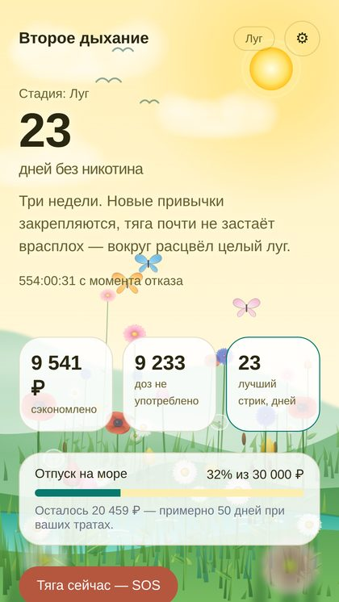
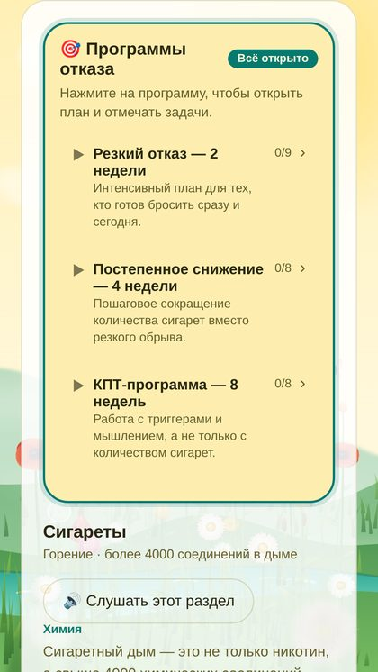
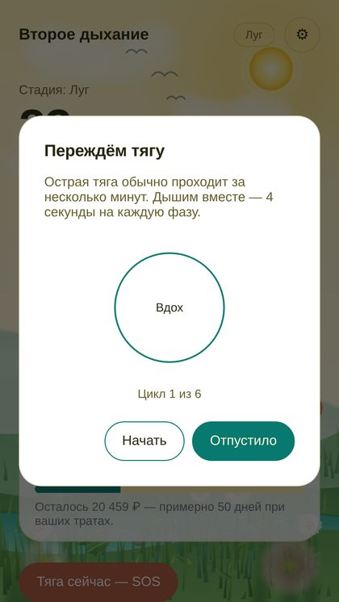
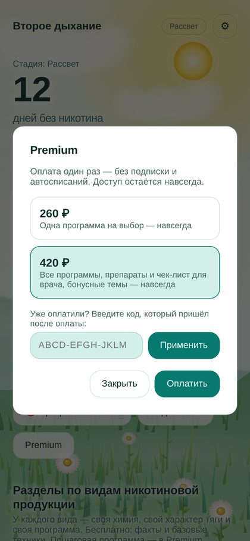

Помощник для тех, кто бросает курить, вейп, стики или паучи
Счётчик дней без никотина, сэкономленные деньги, кнопка SOS при тяге и пошаговые программы отказа. Без регистрации и рекламы, данные остаются на вашем телефоне.
Что внутри




- Счётчик без никотина: дни, часы, минуты, 10 этапов роста «вашего луга».
- Сэкономленные деньги и цель накоплений со сроком.
- Кнопка SOS: дыхательное упражнение, чтобы переждать острую тягу.
- Программы отказа на каждую неделю: отдельно для сигарет, вейпа, стиков и паучей.
- Дневник тяги, достижения, напоминания, озвучка разделов.
- Раздел «Препараты» и подготовка к визиту к врачу.
Стоимость
Платите один раз, без подписки и автосписаний. Часть возможностей бесплатна: счётчик, экономия, цель, SOS, дневник, достижения, напоминания и базовые материалы.
260 ₽
Одна программа- одна программа отказа на ваш выбор
- доступ навсегда
420 ₽
Всё включено- все программы отказа
- раздел «Препараты» и чек-лист для врача
- дополнительные темы оформления
- доступ навсегда
Как получить платный доступ
- В приложении откройте окно Premium, выберите тариф и нажмите «Оплатить». Откроется страница оплаты ЮKassa: платите картой или через СБП.
- После оплаты вернитесь в приложение: программы откроются сами. Приложение покажет ваш код доступа вида ABCD-EFGH-JKLM — сохраните его.
- Если вы переустановили приложение или сменили телефон, введите сохранённый код в окне Premium в поле «Есть код доступа?» и нажмите «Применить».
Один код действует на трёх устройствах. Условия возврата описаны в публичной оферте.
Важно
Приложение носит информационный и мотивационный характер. Оно не заменяет консультацию врача, не ставит диагнозов и не назначает лечение. Решения о лекарствах и о состоянии здоровья принимайте вместе с врачом. Возрастное ограничение 18+.
Контакты
Зазнобин Николай Юрьевич, самозанятый (плательщик налога на профессиональный доход).
E-mail для вопросов и возвратов: kolya.zaznobin@yandex.ru